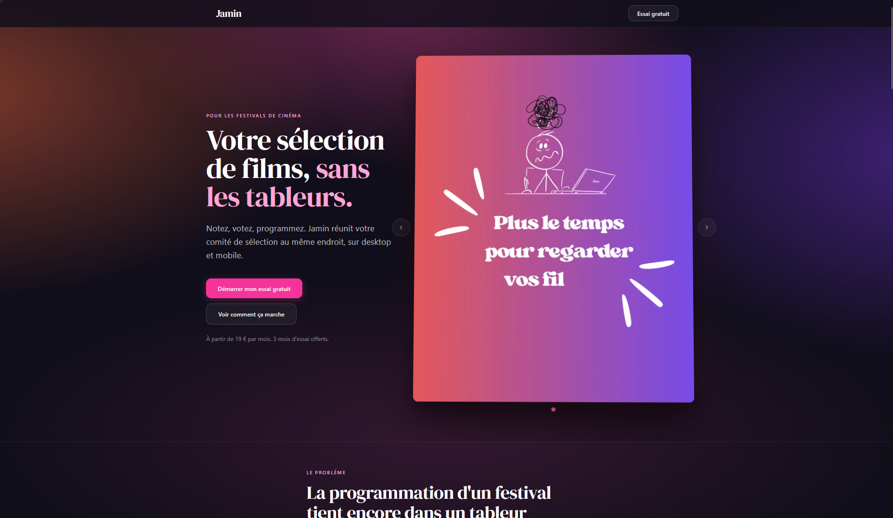
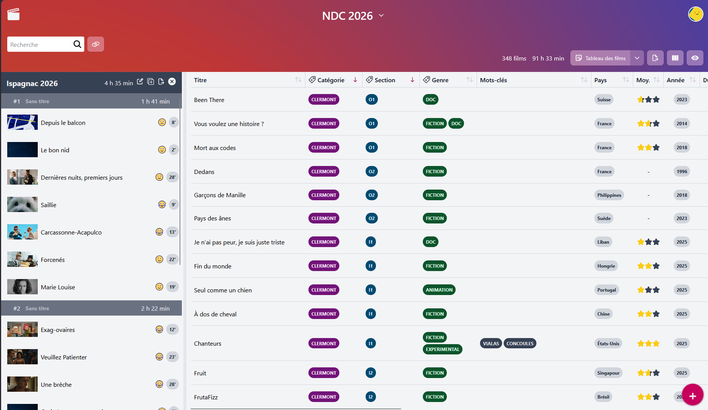

Alternance 2025-2026 : Gjini.CO
Présentation
Quand et comment ?
À l'entreprise Gjini.CO, en Lozère, une petite
entreprise personelle. J'y étais en alternance, avec des
périodes de 2 mois de cours / 3 mois en entreprise.
Quel est le sujet ?
Continuer l'application web
Jamin afin de la
rendre commercialisable.
Cette mission à été passionante pour diverses raisons :
déjà l'apprentissage de 2 nouvelles technologies (rust
et next), mais aussi grâce à la diversité de ses tâches.
Durant cette période d'alternance nous avons, outre la
résolution continue des bugs et l'ajout de nombreuses
features; fait transité l'application de mono-tenante à
multi-tenante, mis en place une stratégie de SEO (search
engine optimisation), mis en place un flux SSE...
En paralèlle de ces missions, je devais organiser le
projet en tenant à jour la liste des tâches évidement,
mais surtout faire preuve d'initiatives et d'autonomie
pour la création et résolution des tâches, ainsi que
m'encourageait à faire mon maître d'aleternance.
Au final, je considère cette alternance comme une
formidable expérience, sur le plan technique mais aussi
sur le plan humain, car mon maître d'apprentissage
m'aura poussé jusqu'au bout pour m'impliquer toujours
davantage dans le projet, à proposer des idées, donner
mon avis même contraire, etc.
Technologie(s)
Rust
Une découverte et un coup de coeur pour moi. J'aurais
appris ce langage durant cette alternance, et il est
utilisé pour la réalisation de l'API de Jamin, ainsi que
pour sa CLI utilitaire.
React / Next.js
Utilisé pour le front de Jamin. Je connaissais déjà
React mais Next.js est une agréable découverte.